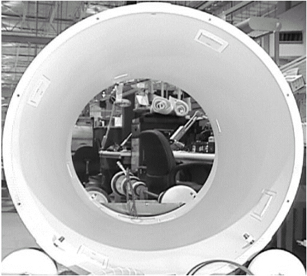
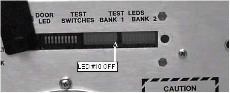

Operating Documentation
Direction 5440001-3, Rev# 6
Signa HDxt Service Methods
Module Version 2.0, Version Date 10/30/08
Operating Documentation |
| Required Persons | Preliminary Reqs | Procedure | Finalization |
|---|---|---|---|
| 2 | Not Applicable | 4 to 6 | Not Applicable |
This document covers the replacement of the 1.5T Twin RF Body Coil shown in Illustration 1. There are two part numbers for the replacement coil, based on color only. Make a note of the original coil part number so the proper replacement coil is ordered.
Illustration 1: Rear View of 1.5T Twin RF Coil Removed from Gradient Coil

| Item | Qty | Effectivity | Part# | Manufacturer | |
|---|---|---|---|---|---|
| Personal Protection Equipment (PPE) | 1 | - | - | - | |
| Composed of : | |||||
| Gloves | 1 | - | - | - | |
| Safety Glasses | 1 | - | - | - | |
| Safety Shoes | 1 | - | - | - | |
| Long Sleeve Shirt and Pants | 1 | - | - | - | |
| 5 Gallon Bucket to collect coolant | 1 | - | 2239133 | - | |
| Authorized Personnel Floor Sign | 1 | - | 2289812 | - | |
| Non-Magnetic Tool Kit | 1 | - | 2385097 or 5112581 | - | |
| Item | Qty | Effectivity | Part# | Manufacturer |
|---|---|---|---|---|
| Gradient Chiller Coolant (1 gallon container) | 4 to 6 | - | 2297672 | - |
| Absorbent Towels | 1 Pack | - | - | - |
| Lock-Out Tag-Out (LOTO) as described in OSHA Lockout Tagout Requirements | 1 | - | - | - |
| Item | Qty | Effectivity | Part# | Manufacturer | |
|---|---|---|---|---|---|
| 1.5T RF Body Coil and FRU Case | 1 | - | 2208999-8 | - | |
| - | - | - | 2208999-4 | - | |
| 1.5T RF Body Coil and FRU Case (HDx forward production systems) | 1 | - | 2208999-11 | - | |
| ||||
| Strong Magnetic Field! | ||||
| Ferrous materials can become dangerous projectiles in the presence of the magnetic field Produced by the Signa Magnet. | ||||
| Do not Bring any ferromagnetic tools or equipment into the magnet room. |
| ||||
| Dangerous Work Area! | ||||
| Use of heavy equipment for coil removal and replacement presents hazards to all personnel in the area. | ||||
|
| Condition | Reference | Effectivity |
|---|---|---|
Remove power at the PDU and apply LOTO as described in Lockout Tagout for Gradient Amplifier / PDU. | - | - |
To remove the front bridge cover:
Remove the two (2) M6 Phillips screws securing the cover to the front bridge.
Remove the front bridge cover, and set aside in a safe location out of the way of traffic.
Detach the two parts of the split bridge by removing the four (4) M10 nuts holding the two sections together. Slide the rear part of the bridge by moving the rear pedestal until the two halves of the bridge are completely disengaged.
To detach the front bridge support from the front end bell:
Loosen the lock nuts at the bottom of the support legs.
Remove the two (2) M10 bolts using an adjustable wrench or a 17 mm socket wrench.
| NOTE: | It is not necessary to detach the bridge support from the bridge. |
Slide the long section of the bridge out of the magnet bore.
Turn off the gradient cooling lines (inlet and outlet) at the valve located in front of the magnet.
Turn the Gradient Chiller off and perform LOTO.
Remove both coolant lines from the coil, and allow to drain into a bucket or container.
To disconnect the coaxial cables from the RF Body coil:
Remove the two (2) coaxial bias lines labeled J3/J5 and J4/J6 at the front and rear of the RF Body Coil.
Remove the two (2) rigid, blue coaxial RF drive cables from the bulkhead at the rear of the RF Body Coil.
Remove the front and rear cover straps located at the interface between the front and rear end bells and the RF Body Coil.
Use a non-magnetic 5/16 in. slot screwdriver to extend the two (2) feet at the 4 and 8 o’clock positions at the bottom of each end of the RF Body Coil (total of 4 feet) until each foot contacts the Gradient Coil underneath. (See Illustration 2.)
Illustration 2: Location of RF Body Coil Feet

Remove the bore light caps at the 10 and 2 o’clock positions on the front end bell.
Remove the M4 screws securing each cap to the front end bell.
Remove the bore light caps, and relocate to a safe location out of the way of traffic.
Carefully detach (peel) the bore lights from the RF Tube surface.
Remove the bore temperature sensor cable from the groove in the front end bell, and detach it from the SRI.
Remove the four (4) M10 screws at the predefined positions using an 8 mm Allen wrench.
Replace the screws removed in Step 11 by M10 studs.
Open access panels on the front end bell by removing eight (8) M6 screws using a flat-head screw driver (typical at two locations).
| NOTE: | Coolant spillage may occur in the next step. Have absorbent towels available if that happens. |
Detach the four (4) gradient coolant lines from the inside of the end bell (push connectors) and, to minimize spillage, fold the lines back onto themselves and temporarily secure into this position with rope-cord or adhesive tape.
Remove the 8 nylon nuts that secure the front end bell to the RF Body Coil.
Remove the 8 nylon nuts that secure the rear end bell to the RF Body Coil.
Remove the remaining twenty-four (24) M10 bolts in a star pattern on the front end bell using an 8 mm Allen wrench.
Completely slide out the front end bell.
| NOTE: | The rear end bell is not removed. |
Refer to Illustration 3to slide the RF Body Coil out of the Gradient Coil.
Illustration 3: Sliding RF Body Coil Out onto Tracks

Carefully inspect the gaskets on the front and rear end bells. Confirm that the gasket surface that contacts the RF Body Coil is in good condition (not nicked, cut, severely deformed or otherwise damaged) and will not leak when subjected to a vacuum. Replace the gasket(s) if damage is found.
Use a non-magnetic 5/16 in. slot screwdriver to extend the two (2) feet at the 4 and 8 o’clock positions at the bottom of each end of the replacement RF Body Coil (total of 4 feet) about 0.3 inch (8 mm) from the outer diameter of the coil.
Confirm that the legs at the 12 o’clock position on each end of the RF Body Coil are fully retracted and flush with the coil surface. (These legs can only be adjusted with an Allen wrench.)
Refer to Illustration 4 and install the replacement RF Body Coil.
| NOTE: | Use care to ensure that the legs on each end of the RF Body coil do not catch on the edge of the fiberglass straps in the center of the gradient coil or tear the reflective Thermal Radiation Shield (TRS) film exposed on the inside, front of the gradient coil. |
Illustration 4: Sliding New RF Coil into Place

Insert the coil into the bore until the RF Body Coil studs pass through the slots in the rear end bell surface, and the RF Body coil surface contacts the rear end bell.
Adjust the height of the rear legs to make the RF Body Coil surface as level as possible with the rear end bell surface.
Roughly adjust the height of the front legs.
Slightly rotate the RF Body Coil as needed to until the rear RF Body Coil studs pass through the slots on the rear end bell. (Rotational centering is not critical at this time.)
Replace the front end bell.
Attempt to place the front end bell on the front of the RF Body Coil so that the studs match the holes on the end bell.
Adjust the height of the front legs, if necessary, in order to make the RF Body Coil surface as level as possible with the front end bell surface.
Seat the studs into the front end bell, and rotate the end bell and RF Body Coil until the twenty-four (24) holes on the front end bell match up with those on the magnet stainless steel ring.
Install 8 nylon nuts to secure the front end bell to the RF Body Coil.
Install 8 nylon nuts to secure the rear end bell to the RF Body Coil.
Use an 8 mm Allen wrench to install the twenty-four (24) M10 bolts in a star pattern on the end bell and secure the end bell to the enclosure.
From the front end bell access panels, reconnect the four (4) gradient coolant lines.
Reinstall the bore temperature sensor cable into the groove in the front end bell.
Coil the excess cable, leaving about 2 feet of the cable end free, and tie-wrap the cable to the studs securing the SRI to the magnet face.
Connect the end of the cable to J10 on the SRI.
Reinstall the bore lights onto the inside surface of the RF Body Coil.
Reinstall the bore light caps at the 10 and 2 o’clock positions on the front end bell using the two (2) M4 screws.
Fully retract the two (2) threaded front and rear RF Body Coil legs (4 total), and tighten the plastic nut until snug so that the legs do not vibrate. Do not overtighten the plastic nut.
Reinstall the front and rear cover straps to the end bell interfaces at the front and rear of the RF Body Coil.
Reconnect the coaxial cable bias and RF drive lines.
Reconnect the front and rear pair of coaxial cable bias lines labeled J3/J5 and J4/J6.
Reconnect the pair of rigid, blue coaxial cable I and Q RF Drive Lines at the rear of the RF Body Coil to the connectors on the Bulkhead Interface.
Place the gradient coolant line valves behind the magnet in the open position.
Remove all LOTO devices.
Restore power to the MRI system.
Verify the gradient chiller is running, check the coolant level, and replenish coolant as necessary.
View the fittings through the transparent window on the front end bell, and confirm that none of the fittings are leaking coolant.
Check the gradient coolant valves behind the magnet, and confirm that these are also not leaking.
To reinstall the bridge into the bore:
Slide the long section of the bridge back into the bore.
Secure the front bridge support to the end bell using the two (2) M10 bolts.
Tighten the locknuts on the M10 bolts.
If the system has a split bridge, move the rear pedestal until the two parts of the bridge are engaged. Secure with the four (4) M10 nuts using an adjustable wrench.
Replace the front Aesthetic Ring (no tools required).
Replace front bridge cover, and secure using two (2) M6 Phillips screws.
Confirm that LEDs are illuminated on the front of the RFI and SSM, and confirm that the fans at the front of the RF Amplifiers are rotating.
| ||||
| THE SSM WILL NOT FAULT IF IT IS CALIBRATED WITH A DISCONNECTION OR POOR CONNECTION TO ONE OF THE 4 MAGNET ROOM DYNAMIC DISABLE BIAS LINES (J72, J73, J75, AND J76 ON THE MAGNET ROOM SIDE OF THE PENETRATION PANEL). IMAGE SNR DEGRADATION WILL BE NOTICED, BUT THE SSM MAY NOT FAULT. MAKE CERTAIN THE FOUR BIAS LINE CONNECTIONS FROM THE PEN PANEL TO THE RF COIL ARE CONNECTED BEFORE PERFORMING THIS CALIBRATION. | ||||
Press and release the CAL Switch on the front of the SSM. (See Illustration 5.)
| NOTE: | This samples the open circuit fault detect signals, and adjusts the threshold accordingly for the Dynamic Disable Circuits: J42 (Body 1), J43 (Body 2), and J44 (Direct Drive). When the CAL Switch is pressed, the LEDs labeled TEST, DRV FLT, and PS FLT illuminate. This does not indicate a fault. |
Illustration 5: Location of SSM Cal Switch

View the front panel LEDs. Ensure the Bank 1, LED #10, is off. (See Illustration 6.) This LED indicates the adjustment process was successful.
Illustration 6: SSM Front Panel LEDs

Flip the toggle switch on the SCC Cabinet back to the upper position so the Magnet Monitor will be able to dial out.
Verify that the system is functional by completing one head and body scan.
Dispose of excess gradient coolant drained earlier from the gradient coil according to local ordinances and regulations.